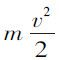
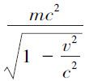
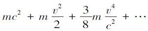
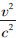
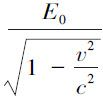
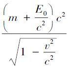
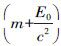
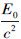
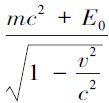

我们前面的论述清楚地表明，(狭义)相对论是从电动力学和光学发展出来的。在电动力学和光学的领域中，狭义相对论对理论的预料并未作多少修改；但狭义相对论大大简化了理论的结构，亦即大大简化了定律的推导，而且更加重要得多的是狭义相对论大大减少了构成理论基础的独立假设的数目。狭义相对论使得麦克斯韦-洛伦兹理论看来好像很合理，以致即使实验没有明显地予以支持，这个理论也能为物理学家普遍接受。
经典力学需要经过修改才能与狭义相对论的要求取得一致。但是此种修改大体上只对物质的速度v 比光速小得不多的高速运动定律有影响。我们只有在电子和离子的问题上才能遇到这种高速运动；对于其他运动则狭义相对论所得结果与经典力学定律相差极微，以致在实践中此种差异未能明确地表现出来。在我们未开始讨论广义相对论以前，将暂不考虑星体的运动。按照相对论，具有质量m 的质点的动能不能再由众所周知的公式

来表达，而是应由另一公式

来表达。当速度v 趋近于光速c 时，此式趋近于无穷大。因此，无论用于产生加速度的能量有多大，速度v 必然总是小于c 。若将动能的表示式以级数形式展开，即得

若

与1相比时相当微小，上式第三项与第二项相比也总是相当微小，所以在经典力学中一般不予计入而只考虑其中的第二项。第一项mc 2 并不包含速度v ，若我们只讨论质点的能量如何依速度而变化的问题，这一项也就无需加以考虑。我们将在以后再叙述它的本质上的意义。狭义相对论导致的具有普遍性的最重要的结果是关于质量的概念。在相对论创立前，物理学确认两个具有基本重要性的守恒定律，即能量守恒定律和质量守恒定律；过去这两个基本定律看来好像是完全相互独立的。借助于相对论，这两个定律已结合为一个定律。我们将简单地考察一下此种结合是如何实现的，并且会具有什么意义。
按照相对性原理的要求，能量守恒定律不仅对于坐标系K是成立的，而且对于每一个相对于K 作匀速平移运动的坐标系K′ 也应当是成立的，或简言之，对于每一个“伽利略”坐标系都应该能够成立。与经典力学不同，从一个这样的坐标系过渡到另一个这样的坐标系时，洛伦兹变换是决定性的因素。
通过较为简单的探讨，我们就可以根据这些前提并结合麦克斯韦电动力学的基本方程得出以下结论： 若一物体以速度v 运动，以吸收辐射的形式吸收了 [1] 相当的能量E 0 ，在此过程中并不变更它的速度，则该物体因吸收而增加的能量将为

考虑上述的物体动能表示式，就得到所求的物体的能量为

这样，该物体所具有的能量就与一个质量为

、并以速度v 运动的物体所具有的能量一样。因此我们可以说： 若一物体吸收能量E 0 ，则其惯性质量亦应增加一个
的量；可见物体的惯性质量并不是一个恒量，而是随物体的能量的改变而改变的。甚至可以认为一个物系的惯性质量就是它的能量的量度。于是一个物系的质量守恒定律与能量守恒定律就成为同一的了，而且这质量守恒定律只有在该物系既不吸收也不放出能量的情况下才是正确的。现在将能量的表示式写成如下形式
我们看到，一直在吸引我们注意的mc 2 只不过是物体在吸收能量E 0 以前原来具有的能量 [2] 。
目前(指1920年；见本节末尾附注)要将这个关系式与实验直接比较是不可能的，因为我们还不能够使一个物系发生的能量变化E 0 大到足以使所引起的惯性质量变化达到可以观察的程度。与能量发生变化前已存在的质量m 相比， 是太小了。由于这种情况，经典力学才能够将质量守恒确立为一个具有独立有效性的定律。
最后让我就一个基本问题再说几句话。电磁超距作用的法拉第-麦克斯韦解释所获得的成功使物理学家确信，像牛顿万有引力定律类型的那种(不涉及中介媒质的)瞬时超距作用是没有的。按照相对论，我们总是用以光速传播的超距作用来代替瞬时超距作用(亦即以无限大速度传播的超距作用)。这点与速度c 在相对论中起着重要作用的事实有关。在本书第二部分我们将会看到广义相对论如何修改了这一个结果。
【英文版附注】随着用α粒子、质子、氘核、中子或γ射线轰击元素而引起的核变化过程的实现，由关系式E=mc 2 表示的质能相当性已得到充分的证实。参与反应的各质量之和再加上轰击粒子(或光子)动能的等效质量，总是大于反应后所产生的各质量之和。两者之差就是所产生的粒子的动能的等效质量，或者是所放出的电磁能(γ光子)的等效质量。同样，一个自发蜕变的放射性原子的质量，总是大于蜕变后所产生的各原子的质量之和，其差为所产生的粒子的动能的等效质量(或光子能的等效质量)。对核反应中所发出的光的能量进行测量，再结合此种反应的方程，就能够以很高的精确度计算出原子量。
罗伯特·伍·罗森
(Robert W. Lawson)
[1] E 0 是所吸收的能量，是从与物体一起运动的坐标系判断的。
[2] 从与物体一起运动的坐标系判断。